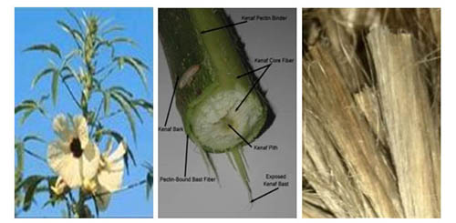

Сіамський джут або мешта/кенаф – це пряжа, скручена із волокон рослини Гібіскус Каннабіс сім’ї мальвових. Гібіскус каннабінус - однорічна трав’яниста рослина, висота якої може досягати більше 3 м. Квітки блідо -жовті або червоні з малиновими центрами. Цвітіння відбувається з літа до осені. Характеризується швидким зростанням; рослина може досягати більше чотирьох футів за чотири місяці. Кенаф вирощували в Єгипті за тисячоліття до нашої ери для виготовлення мотузок і тканини (мішків, вітрил).
Рослина вирощується по всій Азії, переважно як волокниста культура і для олії, яка використовується в промисловості. Волокна використовуються у виробництві грубих тканин, таких як килими.
Кенаф використовується в Індії для виробництва сигаретного паперу. Виробники паперу використовують кенаф його замість деревини у виробництві паперової маси. Таким чином, використовуються луб'яні волокна або сама стебла. Кенаф - це сучасне паперове волокно в Японії. До Першої світової війни ввозився до країни болот з Персії, і в цей період називався «російським джутом» (також і кенафом). У радянські час дослідні посіви кенафа робились в Узбекистані. Основний виробник кенафу –Таїланд до 1939 року відомий як Сіам.
Фото: http://antropocene.it/
